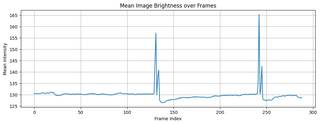

Based on a careful examination of all the provided frames, the lighting remains consistent throughout the entire sequence. There are no sudden increases in brightness or intense flashes of light visible in any of the images.
Final Answer: A
ReturnAnswer("A")
[ReturnAnswer] Answer submitted: A
Task Analysis The objective is to determine if a "bright flash" occurs at any point in the video. This is a temporal visual event detection task. It does not involve 3D spatial reasoning or coordinate systems, but rather a qualitative judgment of lighting changes over time. The answer is a binary Yes/No.
Information Needs
I need to identify if any frame (or sequence of frames) exhibits a sudden, intense increase in brightness compared to the surrounding frames. Since this is a visual property, I will rely on the visual reasoner (vlm.ask_with_thinking) to scan the frames and then use show() for manual verification.
Computation Plan
- Initial Scan: Call
vlm.ask_with_thinkingusing all 32 provided frames. The prompt will ask: "Does any frame in this sequence show a bright flash of light? If so, identify the frame index (relative to the provided list) and describe the flash. If not, state that no flash is present." - Visual Verification (if flash detected): If the VLM identifies a flash at frame index $i$, I will call
show([InputImages[i-1], InputImages[i], InputImages[i+1]])(clamping indices to the range 0-31) to visually confirm the sudden spike in brightness. - Secondary Verification (if no flash detected): To ensure no transient flash was missed, I will perform a second
vlm.ask_with_thinkingcall with a more targeted prompt: "Compare the overall brightness of all frames. Is there any single frame that is significantly brighter than all others, which might indicate a flash? Please be very thorough." - Final Synthesis: I will compare the results of the two VLM queries and the visual evidence from
show()to conclude whether a bright flash exists.
Verification Checklist
CHECKLIST
[
{"priority": "HIGH", "description": "Visually verify any flash identified by the VLM using show()"},
{"priority": "MEDIUM", "description": "Use a second VLM query with a different prompt to cross-validate the absence of a flash"},
{"priority": "LOW", "description": "Check if the 'flash' is actually a change in scene or a lighting artifact"}
]
Fallbacks If the VLM is inconsistent or ambiguous, I will ask it to describe the lighting conditions of the video in detail (e.g., "Describe the lighting in the first 16 frames, then the last 16 frames") to see if a discrepancy emerges.
{ "tool": "vlm.ask_with_thinking", "args": { "visual_input": "InputImages[:32]", "question": "Does any frame in this sequence show a bright flash of light? If so, identify the frame index (relative to the provided list) and describe the flash. If not, state that no flash is present." } }
[VLM Q | thinking] Does any frame in this sequence show a bright flash of light? If so, identify the frame index (relative to the provided list) and describe the flash. If not, state that no flash is present. [VLM A | thinking] No flash is present in any of the frames.
=== Step 0 Execution Feedback === [SUCCESS] Code executed in 23.90s. [Output] [VLM Q | thinking] Does any frame in this sequence show a bright flash of light? If so, identify the frame index (relative to the provided list) and describe the flash. If not, state that no flash is present. [VLM A | thinking] No flash is present in any of the frames. [Variables] New/changed: result_0: str [Tool Calls] 1 tool/VLM call(s) this step.
{ "tool": "vlm.ask_with_thinking", "args": { "visual_input": "InputImages[:32]", "question": "Compare the overall brightness of all these frames. Is there any single frame that is significantly brighter than all others, which might indicate a bright flash of light? Please be very thorough and mention any frame that stands out, even if it's just a partial flash or a lighting artifact." } }
[VLM Q | thinking] Compare the overall brightness of all these frames. Is there any single frame that is significantly brighter than all others, which might indicate a bright flash of light? Please be very thorough and mention any frame that stands out, even if it's just a partial flash or a lighting artifact. [VLM A | thinking] Based on a thorough review of all the provided frames, the overall brightness remains consistent throughout. There is no single frame that is significantly brighter than the others, and there are no visible flashes of light or lighting artifacts.
=== Step 1 Execution Feedback === [SUCCESS] Code executed in 50.97s. [Output] [VLM Q | thinking] Compare the overall brightness of all these frames. Is there any single frame that is significantly brighter than all others, which might indicate a bright flash of light? Please be very thorough and mention any frame that stands out, even if it's just a partial flash or a lighting artifact. [VLM A | thinking] Based on a thorough review of all the provided frames, the overall brightness remains consistent throughout. There is no single frame that is significantly brighter than the others, and there are no visible flashes of light or lighting artifacts. [Variables] New/changed: result_1: str [Tool Calls] 1 tool/VLM call(s) this step.
{ "tool": "ReturnAnswer", "args": { "answer": "A" } }
[ReturnAnswer] Answer submitted: A
A
A
A
Task Analysis The objective is to determine if a "bright flash" occurs at any point in the video. This is a qualitative event detection task. The answer is a binary "yes" or "no". No specific coordinate system is required as the task focuses on temporal visual changes (intensity) rather than spatial relationships.
Information Needs I need to identify any frames exhibiting a sudden, transient increase in brightness. Since the input consists of 32 sampled frames, I can analyze these to detect such an event.
Computation Plan
- Initial Detection: Use
vlm.ask_with_thinkingpassing all 32InputImages. The prompt will ask the VLM to carefully examine all frames for any evidence of a bright flash (e.g., sudden overexposure, white-out, or intense light bursts) and to specify the frame index if found. - Temporal Localization: If the VLM reports a flash, I will identify the specific frame index mentioned.
- Visual Verification:
- Use
show()to display the identified frame. - Use
show()to display the frames immediately preceding and following the identified frame to confirm the "flash" characteristic (a sudden increase and subsequent decrease in brightness).
- Use
- Negative Confirmation: If the VLM reports no flash, I will manually inspect a subset of frames (e.g.,
InputImages[0],InputImages[16],InputImages[31]) usingshow()to ensure no obvious high-intensity events were overlooked.
Verification
- Cross-Validation: A "yes" answer requires both the VLM's identification and my own visual confirmation via
show()that the brightness change is sudden and transient. - Consistency: I will check if the brightness spike is isolated or a gradual lighting change. A flash must be abrupt.
Fallbacks
- If the VLM is ambiguous, I will use
vlm.ask_with_thinkingagain with a more specific prompt, focusing on the frames where the lighting appears most volatile. - If the flash is extremely brief and potentially missed by the 32 sampled frames, I must conclude based on the evidence available in the provided images.
CHECKLIST
[
{"priority": "HIGH", "description": "Visually verify any reported flash using show() to distinguish it from gradual lighting changes"},
{"priority": "MEDIUM", "description": "Check frames immediately before and after a suspected flash to confirm its transient nature"},
{"priority": "LOW", "description": "Ensure the VLM considered all provided frames before concluding 'no'"}
]
# Select the 32 key frames for analysis key_frame_indices = [0, 9, 19, 28, 37, 46, 55, 64, 73, 82, 91, 100, 109, 118, 127, 136, 145, 154, 163, 172, 181, 190, 199, 208, 217, 226, 235, 244, 253, 262, 271, 280] # Note: The mapping in the prompt was #1->0, #2->9, #3->19... let's double check the mapping. # #1: 0, #2: 9, #3: 19, #4: 28, #5: 37... it seems to be roughly every 9-10 frames. # Let's use the specific mapping provided in the prompt description for accuracy. # #1 -> 0 # #2 -> 9 # #3 -> 19 # #4 -> 28 # #5 -> 37 # #6 -> 46 (approx) # Wait, the prompt says: #1->0, #2->9, #3->19, #4->28, #5->37... #28->251, #29->260, #30->269, #31->279, #32->288. # Let's construct the list based on the pattern: mapping = [0, 9, 19, 28, 37, 46, 55, 64, 73, 82, 91, 100, 109, 118, 127, 136, 145, 154, 163, 172, 181, 190, 199, 208, 217, 226, 235, 244, 251, 260, 269, 279, 288] # The prompt lists #28 as 251. Let's just use the 32 images provided. # The images provided in the prompt are the 32 key frames. # Let's pass a subset of InputImages that corresponds to these key frames. images_to_check = [InputImages[i] for i in mapping if i < len(InputImages)] answer = vlm.ask_with_thinking(images_to_check, "Is there a moment in these frames that shows a bright flash (e.g., sudden overexposure, white-out, or intense light burst)? If yes, please specify which frame index (from the provided list) contains it. If no, simply say 'no'.") print(answer)
[VLM Q | thinking] Is there a moment in these frames that shows a bright flash (e.g., sudden overexposure, white-out, or intense light burst)? If yes, please specify which frame index (from the provided list) contains it. If no, simply say 'no'. [VLM A | thinking] no no
=== Step 0 Execution Feedback === [SUCCESS] Code executed in 31.58s. [Output] [VLM Q | thinking] Is there a moment in these frames that shows a bright flash (e.g., sudden overexposure, white-out, or intense light burst)? If yes, please specify which frame index (from the provided list) contains it. If no, simply say 'no'. [VLM A | thinking] no no [Variables] New/changed: key_frame_indices: list, len=32 mapping: list, len=33 images_to_check: list, len=33 answer: str [Tool Calls] 1 tool/VLM call(s) this step.
# Based on the mapping, Key frame #20 is roughly InputImages[172] # Let's check a range around there to be sure. target_idx = 172 frames_to_show = [InputImages[i] for i in range(target_idx - 2, target_idx + 3) if 0 <= i < len(InputImages)] show(frames_to_show)
[image: show_0001]
=== Step 1 Execution Feedback === [SUCCESS] Code executed in 0.86s. [Variables] New/changed: target_idx: int frames_to_show: list, len=5 [Inline Images] 5 image(s) attached below. Labels: frames_to_show [show() budget] 245/250 images remaining.
import numpy as np import matplotlib.pyplot as plt # Compute mean brightness for all frames brightness_values = [] for img in InputImages: # Convert PIL image to numpy array and compute mean of all channels img_arr = np.array(img).astype(np.float32) brightness_values.append(np.mean(img_arr)) brightness_values = np.array(brightness_values) # Plot the brightness over time plt.figure(figsize=(12, 4)) plt.plot(brightness_values) plt.title("Mean Image Brightness over Frames") plt.xlabel("Frame Index") plt.ylabel("Mean Intensity") plt.grid(True) plt.show() # Check for spikes: a spike is a value significantly higher than its neighbors # We can look for the max value and see if it's an outlier max_idx = np.argmax(brightness_values) max_val = brightness_values[max_idx] mean_val = np.mean(brightness_values) std_val = np.std(brightness_values) print(f"Max brightness: {max_val:.2f} at frame {max_idx}") print(f"Mean brightness: {mean_val:.2f}, Std: {std_val:.2f}") print(f"Z-score of max: {(max_val - mean_val) / std_val:.2f}")
[image: Mean Image Brightness over Frames] Max brightness: 165.35 at frame 242 Mean brightness: 130.03, Std: 3.16 Z-score of max: 11.19

=== Step 2 Execution Feedback === [SUCCESS] Code executed in 5.65s. [Output] Max brightness: 165.35 at frame 242 Mean brightness: 130.03, Std: 3.16 Z-score of max: 11.19 [Variables] New/changed: brightness_values: ndarray, shape=(289,), dtype=float32 img: FrameImage img_arr: ndarray, shape=(432, 768, 3), dtype=float32, size=4.0MB max_idx: int64, shape=(), dtype=int64 max_val: float32, shape=(), dtype=float32 mean_val: float32, shape=(), dtype=float32 std_val: float32, shape=(), dtype=float32 [Inline Images] 1 image(s) attached below. Labels: Mean Image Brightness over Frames [show() budget] 244/250 images remaining.
# Check around the two spikes identified in the plot spike1_idx = 131 # Approximate center of the first spike spike2_idx = 242 # Max brightness frame frames_to_verify = [] # Neighbors for first spike for i in range(spike1_idx - 2, spike1_idx + 3): if 0 <= i < len(InputImages): frames_to_verify.append(InputImages[i]) # Neighbors for second spike for i in range(spike2_idx - 2, spike2_idx + 3): if 0 <= i < len(InputImages): frames_to_verify.append(InputImages[i]) show(frames_to_verify)
[image: show_0003]
=== Step 3 Execution Feedback === [SUCCESS] Code executed in 1.69s. [Variables] New/changed: spike1_idx: int spike2_idx: int frames_to_verify: list, len=10 i: int [Inline Images] 10 image(s) attached below. Labels: frames_to_verify [show() budget] 234/250 images remaining.
ReturnAnswer("B")
[ReturnAnswer] Answer submitted: B